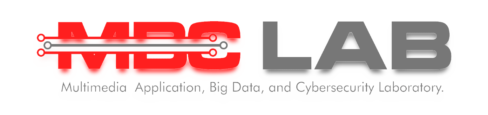

MBC Laboratory
Selamat datang di MBC Lab! MBC Lab adalah sebuah Pusat Riset teknologi dan sebuah Perusahaan yang bergerak di bidang Konsultan Cybersecurity, Big Data, Game Technology, dan Geographic Information System. Dengan dedikasi tinggi terhadap inovasi dan keunggulan, kami berkomitmen untuk memberikan solusi yang canggih dan tepat guna untuk membantu mengatasi tantangan teknologi di era digital ini. Mari bekerja sama untuk menciptakan masa depan yang lebih aman, terhubung, dan terinformasi.
EXPLORE
